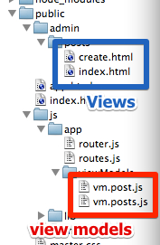

Its been too long since I've worked on this project. The reasons? I've been busy with work and lost inspiration. However I'm back with it now.
My previous posts have all been about playing with mongodb and storage options. I now understand the basics of this and think its time to attack my application from another direction.
Because I want to make my blog a SPA I needed some way to handle client side routing and navigation. After a bit of thought I decided on a modification on John Papa's routing in his SPA tutorial series on pluralsight. The main difference being I would lazy load both my html partials and my view models.
I've laid my application out as below, where each "page" of my SPA will have its own html partial and its own view model. Then I've created a router module that will get called upon start up and define all my routes. My routes are stored in a separate routes module.
Each page requires route. Each route will consist of a route definition, a html template and a view model. There may be more attributes later, we'll have to see.
var routes = {
createPost: {
route: '#/posts/create',
template: 'admin/posts/create.html',
viewModel: 'app/viewModels/vm.post'
},
listPost: {
route: '#/posts',
template: 'admin/posts/index.html',
viewModel: 'app/viewModels/vm.posts'
}
};I'm using sammyjs to help with the client side routing. It works by taking advantage of the hash in the url to prevent page reloads. It then uses the route after the hash to implement on a kind of client side routing. Where each route will call a method allowing the developer to change the page content or call javascript.
The router registers each of the routes upon application startup. To do this using sammy you must first declare a new sammy application defining your application element (usually a central div). Then call the .get function for each of the routes. The .get accepts a route hash and a callback function that gets fired when the route is called. Within this callback I use require (which I will talk about in a later post) to lazy load the view model javascript for the page and then load the route template into the main content.
var registerRoutes = function() {
_.each(routes, function(route) {
app.get(route.route, function() {
var container = this.$element(); // $('#app');
require([route.viewModel], function(viewModel) {
container.load(route.template);
});
});
});
}After the routes have been registered. You need to start the sammy application. At this point you can also define a default route.
var activate = function() {
registerRoutes();
app.run(home);
};
To see an example of this all working go app.html to and try clicking on the links. You'll notice that only the centre content gets loaded and the back button still works.
As mentioned all the code for this blog is stored on github.
Mat McLoughlin - 30/09/2012
There's always a big step going from a simple hello world app to something more useful when learning a new language. Node is no different. I've spent the past week looking around trying to find a clean way to implement the blog post part of my api. I didn't know which storage to use; mongodb, azure tables, redis, postgres. I didn't know which driver to use (of which there are to many to list) or even, how to structure my code.
Unsurprisingly there are a lot of varying opinions on which method of storage is best but I excluded postgres on the basis I've used RDBMS all my life. Redis I excluded as the word on the street is that it is more suitable for transient data than permanent.
So that left me with mongodb and azure tables. Now you'd think that, as my URL suggests, I'd use azure tables as my site is hosted on there, but you'd be wrong. Because this is my first venture into document storage I figured it would be better to go with the safe bet, so mongodb it is.
So that's my storage sorted. Next on the list is the driver. Now at this point I'd been watching some node videos by Rob Conery (They are excellent by the way you should check them out on Tekpub). One of his videos gives a comparison of redis, mongodb and postgres. During this video he mentions what is the most popular mongodb drive, mongoose. Now mongoose is an ORM of sorts and requires you to define schemas. I wanted to stay away from all this as it felt kinda static, I think Rob agreed. Again, this whole idea was to try move away from all the things I'm used to. So I choose a driver that would allow me to throw things into the database however I wanted, I choose mongolian. It seems brilliant in its simplicity. Its aim is to replicate the mongodb command line functionality. I highly recommend you check it out.
Finally, structuring my code. I'm not going to lie, I have absolutely no idea how I'm going to do this, but I do know one thing. I'm not going to over architect it. So much of my coding is spent planning for the future. Making sure I implement something in a way that its not going to cause problems later down the line due to inflexibility. It is really important to take these things into consideration, however, I often find myself putting something in place that never gets used. It just adds un-needed complexity to the program. This time round I'm just going to write things so they work well now instead of worrying about the future. It may be a mistake, it may make my life hell in a month of two, we'll just have to see. For now:
Yagni (You ain't gonna need it)
Mat McLoughlin - 27/12/2012
Firstly, I'm working on a mac for this project so all instructions will be for osx. There's plenty of tutorials out there on how to install node.js on osx so I'll be brief on the installation instructions. Frankly I'd be surprised if you happened upon my blog when looking for instructions. Anyway, to make the whole process as painless as possible I chose to install homebrew, an excellent package manager for osx. To install just paste this line into your terminal prompt.
ruby <(curl -fsSkL raw.github.com/mxcl/homebrew/go)More advanced installation options are available here. After homebrew has installed paste the following commands into your terminal
brew install node curl http://npmjs.org/install.sh | shThat should install node.js and the node package manager (npm). The package manager is the nuget equivalent for node. Finally, the usual test to make sure everything has installed correctly:
node -v npm -vOk, now thats all sorted lets get started with setting up the server. Because this whole project is an experiment for me I've decided my blog is going to be a single page application or SPA for short. The idea being that everything will be controlled from one page, swapping and changing the html content as need. This also means the majority of the logic will be on the client as oppose to, traditionally, the server. All the data will be served up via a RESTful API. For more info on this I recommend watching the John Papa's Single Page Apps with HTML5, Web API, Knockout and jQuery, however his tutorial is aimed at C#.
After a bit of research it seemed I had two choices for providing a RESTful API, express or restify. Both of these libraries are mature and well used, but in the end the decision was a simple one. While resitfy focuses solely on providing an API, express has lots of additional functionality such as a templating engine, MVC etc. I'm not going to need any of this so restify it is. However there is one thing restify doesn't do and thats serve static content such as html pages, images and stylesheets. For this I found another library called connect. So to go through this quickly.
Lets create a new folder for our node application:
mkdir invalid_blog cd invalid_blogInstall restify and connect via the npm. npm installs all packages into the root of your node application:
npm install restify npm install connectCreate a new file called server.js. This file will be used as the entry point for my application:
touch server.jsAnd finally crank up your favourite text editor. In my case thats textmate (sublime is pretty good too!):
mate .Because I'm just starting to find my way around I stole the 'hello world' example from the restify website and added it to my server.js file
var restify = require('restify');
function respond(req, res, next) {
res.send('hello ' + req.params.name);
}
var server = restify.createServer();
server.get('/hello/:name', respond);
server.head('/hello/:name', respond);
server.listen(8080, function() {
console.log('%s listening at %s', server.name, server.url);
});This example sets up a new route /hello/ which expects a parameter :name. The route then calls the method respond, that returns 'hello :name'. All this is done on localhost port 8080. To see this you need to start the server running. Go back to the terminal and type:
node server.jsNavigate to localhost:8080/hello/foo to see the response in action.
That's a very basic example of a restful api setup. Next thing is to make sure that my server can also serve static content. The concept behind this is to setup a route that will return content from the connect static server. So first we create a new folder to store our static content. Be it convention or not, out of habit I'm going to call this folder 'views'. Then we need to create a new instance of a static server and point it at the directory:
var static_docs_server = connect.static(__dirname + '/views');The we need to create new restify route that will point to the static server:
server.get(/\/\/*/, function(req, res, next) {
return static_docs_server(req, res, next);
});Note: The regular expression /\/\/*/ points towards the root url. There may be a better way of doing this, I'm not sure.
Note: now that there has been a change to server.js you'll need to restart the server in order for the changes to take effect.
Now any content in your views directory will be served from the route url except if you hit the hello url in which case it will hit the restful api. I think in practice I'll move the api into a /api/ route.
Mat McLoughlin - 23/09/2012
Hey, so I bet your already thinking 'Well this is a crap looking blog'. Well it is, but hopefully not for long. You see for a while now I've been wanting to learn how to code in node.js and I figured the best way to start was to write a simple blogging engine (original eh?). So over the coming weeks and months this blog will hopefully start to look a little better, behave a little better and I might learn something on the way.
For a first post I thought it would be a good idea if I detailed the technologies I'm going to be using. None of the choices are based on practicality or suitability. Just purely on my need to learn something new. So here's the list:
As well as the development stack I'm going to be using a couple of other tools:
So I guess there is nothing else to do other than get started.
Mat McLoughlin - 20/09/2012